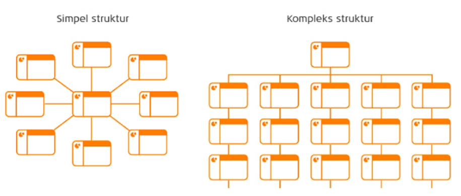

Webstrukturer

Den Sekventielle
Dette betyder at modtageren, eller læseren, kommer igennem hjemmesiden én side af gangen.
Et eksempel er en købs site, hvor man går fra at finde de produkter man gerne vil have, til webshoppens "kurv" og så til købsformularen.
Det er en hjemmeside der går fra et site til det næste.

Hierarki
Denne form for hjemmeside har en breder vinkel.
Det kan være en hjemmeside, der har en navigations sti, med emner, og derfra flere underemner.
En købshjemmeside der for eksempel sælger maling i flere former;
| Vandmaling |
| Træmaling |
| Vægmaling |
| mm. |
Disse emner kan også have underemner.
Denne struktur har en relation til organisations diagrammet, og på denne måde kan det mest relevante blive vist på en hjemmeside.
Hvis det er sommer kan der for eksempel blive vist træmaling til stakittet, nu når vejret er godt til det male i.

Web struktur
Disse hjemmesider har ikke en speciel form for orden man skal se siderne på hjemmesiden igennem.
Det kan være en nyhedsside, hvor det ikke er den første nyhed der for eksempel er mest relevant for brugeren, men det der har mest interesse.
Disse hjemmesider har normalt en tydelig Home knap, så brugeren nemt kan komme tilbage til forsiden.
Denne struktur minder meget om et edderkoppespind, da siderne ikke høre sammen som sådan, men stadig kan have noget til fælles med andre dele af hjemmesiden.
Her er de forskellige webstrukturer sat ind i et diagram, der viser i hvilken sammenhæng
man skal bruge dem i, med syn på hvem det er der skal bruge hjemmesiden.

Kilder; Busch, Anne mette. 2015. "Kommunikation i multimediedesign."